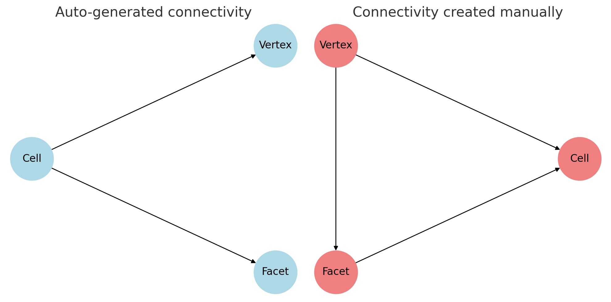

import dolfinx
print(f'DOLFINx version: {dolfinx.__version__}')DOLFINx version: 0.9.0FEniCS is a popular open-source computing platform for solving partial differential equations (PDEs) with the finite element method (FEM). FEniCS enables users to quickly translate scientific models into efficient finite element code. With the high-level Python and C++ interfaces to FEniCS, it is easy to get started, but FEniCS offers also powerful capabilities for more experienced programmers. FEniCS runs on a multitude of platforms ranging from laptops to high-performance computers

The latest stable release of FEniCSx is version 0.9, which was released in October 2024. The easiest way to start using FEniCSx on MacOS and other systems is to install it using conda:
$ conda create -n fenicsx
$ conda activate fenicsx
$ conda install -c conda-forge fenics-dolfinx mpich pyvista
$ conda install -c conda-forge petsc petsc4py
$ conda install ipykernel
$ python -m ipykernel install \
> --user --name fenicsx --display-name "FEniCSx"import dolfinx
print(f'DOLFINx version: {dolfinx.__version__}')DOLFINx version: 0.9.0The FEniCS Project is a research and software initiative focused on developing mathematical methods and software for solving partial differential equations (PDEs). Its goal is to provide intuitive, efficient, and flexible tools for scientific computing. Launched in 2003, the project is the result of collaboration among researchers from universities and research institutes worldwide. For the latest updates and more information, visit the FEniCS Project
The latest version of the FEniCS project, FEniCSx, consists of several building blocks, namely DOLFINx, UFL, FFCx, and Basix. We will now go through the main objectives of each of these building blocks
DOLFINx is the high performance C++ backend of FEniCSx, where structures such as meshes, function spaces and functions are implemented. Additionally, DOLFINx also contains compute intensive functions such as finite element assembly and mesh refinement algorithms. It also provides an interface to linear algebra solvers and data-structures, such as PETScUFL is a high-level form language for describing variational formulations with a high-level mathematical syntaxFFCx is the form compiler of FEniCSx; given variational formulations written with UFL, it generates efficient C codeBasix is the finite element backend of FEniCSx, responsible for generating finite element basis functionsThe goal of this tutorial is to demonstrate how to apply the finite element to solve PDEs using FEniCS. Through a series of examples, we will demonstrate how to:
Important topics include: how to set boundary conditions of various types (Dirichlet, Neumann, Robin), how to create meshes, how to define variable coefficients, how to interact with linear and non-linear solvers, and how to post-process and visualize solutions
Authors: Hans Petter Langtangen, Anders Logg, Jørgen S. Dokken
The goal of this section is to solve one of the most basic PDEs, the Poisson equation, with a few lines of code in FEniCSx. We start by introducing some fundamental FEniCSx objects, such as functionspace,Function, TrialFunction and TestFunction, and learn how to write a basic PDE solver. This will include:
The Poisson equation is the following boundary-value problem:
\[\begin{aligned} -\nabla^2 u(\mathbf{x}) &= f(\mathbf{x})&&\mathbf{x} \in \Omega\\ u(\mathbf{x}) &= u_D(\mathbf{x})&& \mathbf{x} \in \partial\Omega \end{aligned}\]
Here, \(u=u(\mathbf{x})\) is the unknown function, \(f=f(\mathbf{x})\) is a prescribed function, \(\nabla^2\) (often written as \(\Delta\)) is the Laplace operator, \(\Omega\) is the spatial domain, and \(\partial\Omega\) is its boundary. The Poisson problem — consisting of the PDE \(-\nabla^2 u = f\) together with the boundary condition \(u=u_D\) on \(\partial\Omega\) — is a boundary value problem that must be precisely defined before we can solve it numerically with FEniCSx
\[-\frac{\partial^2 u}{\partial x^2} - \frac{\partial^2 u}{\partial y^2} = f(x,y)\]
The unknown \(u\) is now a function of two variables, \(u=u(x,y)\), defined over the two-dimensional domain \(\Omega\)
Solving a boundary value problem in FEniCSx consists of the following steps:
FEniCSxAs we have already covered step 1, we shall now cover steps 2-4
FEniCSx is based on the finite element method, which is a general and efficient mathematical technique for the numerical solution of PDEs. The starting point for finite element methods is a PDE expressed in variational form
The basic recipe for turning a PDE into a variational problem is:
The function \(v\) that multiplies the PDE is called a test function, while the unknown function \(u\) to be approximated is referred to as a trial function. The terms trial function and test function are also used in FEniCSx. Both test and trial functions belong to certain specific function spaces that define their properties
In the present case, we multiply the Poisson equation by a test function \(v\) and integrate over \(\Omega\):
\[\int_\Omega (-\nabla^2 u) v~\mathrm{d} x = \int_\Omega f v~\mathrm{d} x\]
Here \(\mathrm{d} x\) denotes the differential element for integration over the domain \(\Omega\). We will later let \(\mathrm{d} s\) denote the differential element for integration over \(\partial\Omega\), the boundary of \(\Omega\)
A rule of thumb when deriving variational formulations is that one tries to keep the order of derivatives of \(u\) and \(v\) as small as possible. Here, we have a second-order differential of \(u\), which can be transformed to a first derivative by employing the technique of integration by parts. The formula reads
\[-\int_\Omega (\nabla^2 u)v~\mathrm{d}x = \int_\Omega\nabla u\cdot\nabla v~\mathrm{d}x - \underbrace{\int_\Omega \nabla u \cdot v ~\mathrm{d}x}_{\displaystyle \scriptsize\int_{\partial\Omega}\frac{\partial u}{\partial n}v~\mathrm{d}s}\]
where \(\frac{\partial u}{\partial n}=\nabla u \cdot \mathbf{n}\) is the derivative of \(u\) in the outward normal direction \(\mathbf{n}\) on the boundary
Another feature of variational formulations is that the test function \(v\) must vanish on the parts of the boundary where the solution \(u\) is prescribed
In the present problem, this means that \(v = 0\) on the entire boundary \(\partial\Omega\). Consequently, the second term in the integration by parts formula vanishes, and we obtain
\[\int_\Omega \nabla u \cdot \nabla v~\mathrm{d} x = \int_\Omega f v~\mathrm{d} x\]
If we require that this equation holds for all test functions \(v\) in some suitable space \(\hat{V}\), the so-called test space, we obtain a well-defined mathematical problem that uniquely determines the solution \(u\), which lies in some function space \(V\). Note that \(V\) does not necessarily coincide with \(\hat{V}\). We call the space \(V\) the trial space. The equation above is referred to as the weak form(or variational form) of the original boundary-value problem. We can now state our variational problem more precisely: \(~\) Find \(u\in V\) such that
\[\int_\Omega \nabla u \cdot \nabla v~\mathrm{d} x = \int_\Omega f v~\mathrm{d} x\qquad \forall v \in \hat{V}\]
For the present problem, the trial and test spaces, \(V\) and \(\hat{V}\), are defined as follows
\[\color{red}{\begin{aligned} V&=\{v\in H^1(\Omega) \,\vert\, v=u_D \;\text{on } \partial \Omega \}\\ \hat{V}&=\{v\in H^1(\Omega) \,\vert\, v=0 \;\text{on } \partial \Omega \} \end{aligned}}\]
In short, \(H^1(\Omega)\) is the Sobolev space consisting of functions \(v\) for which both \(v^2\) and \(\lvert \nabla v \rvert^2\) have finite integrals over \(\Omega\). The solution of the underlying PDE must belong to a function space in which derivatives are continuous. However, the Sobolev space \(H^1(\Omega)\) also admits functions with discontinuous derivatives
This weaker continuity requirement in the weak formulation (arising from the integration by parts) is crucial for constructing finite element function spaces. In particular, it permits the use of piecewise polynomial function spaces. Such spaces are built by stitching together polynomial functions over simple domains, such as intervals, triangles, quadrilaterals, tetrahedra, and hexahedra
The variational problem is a continuous problem: it defines the solution \(u\) in the infinite-dimensional function space \(V\). The finite element method for the Poisson equation approximates this solution by replacing the infinite-dimensional function spaces \(V\) and \(\hat{V}\), with discrete (finite-dimensional) spaces \(V_h\subset V\) and \(\hat{V}_h \subset \hat{V}\). The resulting discrete variational problem is then stated as: \(~\) Find \(u_h\in V_h\) such that
\[\color{red}{ \begin{aligned} \int_\Omega \nabla u_h \cdot \nabla v~\mathrm{d} x &= \int_\Omega fv~\mathrm{d} x && \forall v \in \hat{V}_h \end{aligned}} \]
This variational problem, together with appropriate definitions of \(V_h\) and \(\hat{V}_h\), uniquely determines our approximate numerical solution to the Poisson equation. Note that the boundary condition is incorporated into the trial and test spaces. While this may appear complicated at first, it ensures that the finite element variational problem has the same form as the continuous variational problem
We will introduce the following notation for variational problems: \(\,\) Find \(u\in V\) such that
\[\begin{aligned} a(u,v)&=L(v)&& \forall v \in \hat{V} \end{aligned}\]
For the Poisson equation, we have:
\[\begin{aligned} a(u,v) &= \int_{\Omega} \nabla u \cdot \nabla v~\mathrm{d} x\\ L(v) &= \int_{\Omega} fv~\mathrm{d} x \end{aligned}\]
In the literature \(a(u,v)\) is known as the bilinear form and \(L(v)\) as a linear form. For every linear problem, we will identify all terms with the unknown \(u\) and collect them in \(a(u,v)\), and collect all terms with only known functions in \(L(v)\).
To solve a linear PDE in FEniCSx, such as the Poisson equation, a user thus needs to perform two steps:
In this section, you will learn:
DOLFINxUp to this point, we’ve looked at the Poisson problem in very general terms: the domain \(\Omega\), the boundary condition \(u_D\), and the right-hand side \(f\) were all left unspecified. To actually solve something, we now need to pick concrete choices for \(\Omega\), \(u_D\), and \(f\)
A good strategy is to set up the problem in a way that we already know the exact solution. That way, we can easily check whether our numerical solution is correct. Polynomials of low degree are usually the best choice here, because continuous Galerkin finite element spaces of degree \(r\) can reproduce any polynomial of degree \(r\) exactly
To test our solver, we’ll construct a problem where we already know the exact solution. This approach is known as the method of manufactured solutions. The idea is simple:
Step 1: Choosing the exact solution
Let’s take a quadratic function in 2D:
\[ u_e(x,y) = 1 + x^2 + 2y^2 \]
Step 2: Computing the source term
If we insert \(u_e\) into the Poisson equation, we obtain
\[f(x,y) = -6, \;\; u_D(x,y) = u_e(x,y) = 1 + x^2 + 2y^2\]
Notice that this holds regardless of the domain shape, as long as we prescribe \(u_e\) on the boundary
Step 3: Choosing the domain
For simplicity, let’s use the unit square:
\[\Omega = [0,1] \times [0,1]\]
Step 4: Summary
This small example illustrates a very powerful strategy:
This workflow is at the heart of the method of manufactured solutions, and it provides a simple but rigorous way to validate our solver
Generating simple meshes
The next step is to define the discrete domain, called the mesh. We do this using one of FEniCSx’s built-in mesh generators
Here, we create a unit square mesh spanning \([0,1]\times[0,1]\). The cells of the mesh can be either triangles or quadrilaterals:
import numpy as np
from mpi4py import MPI
from dolfinx import mesh
N = 8
domain = mesh.create_unit_square(
MPI.COMM_WORLD,
nx=N,
ny=N,
cell_type=mesh.CellType.quadrilateral
)Notice that we need to provide an MPI communicator. This determines how the program behaves in parallel:
MPI.COMM_WORLD, a single mesh is created and distributed across the number of processors we specify. For example, to run the program on two processors, we can use:$ mpirun -n 2 python tutorial_poisson.pyMPI.COMM_SELF, each processor will create its own independent copy of the mesh. This can be useful when running many small problems in parallel, for example when sweeping over different parametersDefining the finite element function space
Once the mesh is created, the next step is to define the finite element function space \(V\). DOLFINx supports a wide variety of finite element spaces of arbitrary order. For a full overview, see the list of Supported elements in DOLFINx
When creating a function space, we need to specify:
In DOLFINx, this can be done by passing a tuple of the form ("family", degree), as shown below:
from dolfinx import fem
V = fem.functionspace(domain, ("Lagrange", 1))See Degree 1 Lagrange on a quadrilateral
The next step is to create a function that stores the Dirichlet boundary condition. We then use interpolation to fill this function with the prescribed values
uD = fem.Function(V)
uD.interpolate(lambda x: 1 +x[0]**2 +2 *x[1]**2)With the boundary data defined (which, in this case, coincides with the exact solution of our finite element problem), we now need to enforce it along the boundary of the mesh
The first step is to identify which parts of the mesh correspond to the outer boundary. In DOLFINx, the boundary is represented by facets (that is, the line segments making up the outer edges in 2D or surfaces in 3D).
We can extract the indices of all exterior facets using:
tdim = domain.topology.dim
fdim = tdim -1
domain.topology.create_connectivity(fdim, tdim)
boundary_facets = mesh.exterior_facet_indices(domain.topology)This gives us the set of facets lying on the boundary of our discrete domain. Once we know where the boundary is, we can proceed to apply the Dirichlet boundary conditions to all degrees of freedom (DoFs) located on these facets
For our current problem, we are using the “Lagrange” degree-1 function space. In this case, the degrees of freedom (DoFs) are located at the vertices of each cell, so every boundary facet contains exactly two DoFs
To identify the local indices of these boundary DoFs, we use dolfinx.fem.locate_dofs_topological. This function takes three arguments:
Once we have the boundary DoFs, we can create the Dirichlet boundary condition as follows:
boundary_dofs = fem.locate_dofs_topological(V, fdim, boundary_facets)
bc = fem.dirichletbc(uD, boundary_dofs)Defining the trial and test function
In mathematics, we usually distinguish between the trial space \(V\) and the test space \(\hat{V}\). For the present problem, the only difference between the two would be the treatment of boundary conditions
In FEniCSx, however, boundary conditions are not built directly into the function space. This means we can simply use the same space for both the trial and test functions
To express the variational formulation, we make use of the Unified Form Language (UFL)
import ufl
u = ufl.TrialFunction(V)
v = ufl.TestFunction(V)Defining the source term
Since the source term is constant throughout the domain, we can represent it using dolfinx.fem.Constant:
from dolfinx import default_scalar_type
f = fem.Constant(domain, default_scalar_type(-6))While we could simply define the source term as f = -6, this has a limitation: if we later want to change its value, we would need to redefine the entire variational problem. By using dolfinx.fem.Constant, we can easily update the value during the simulation, for example with f.value = 5
Another advantage is performance: declaring f as a constant allows the compiler to optimize the variational formulation, leading to faster assembly of the resulting linear system
Defining the variational problem
Now that we have defined all the components of our variational problem, we can write down the weak formulation:
a = ufl.dot(ufl.grad(u), ufl.grad(v)) *ufl.dx
L = f *v *ufl.dxNotice how closely the Python syntax mirrors the mathematical expressions:
\[a(u,v) = \int_{\Omega} \nabla u \cdot \nabla v \,\mathrm{d}x, \;\; L(v) = \int_{\Omega} f v \,\mathrm{d}x\]
Here, ufl.dx represents integration over the domain \(\Omega\), i.e. over all cells of the mesh. This illustrates one of the major strengths of FEniCSx: \(\,\) variational formulations can be written in Python in a way that almost directly matches their mathematical form, making it both natural and convenient to specify and solve complex PDE problems
Expressing inner products
The inner product
\[\int_\Omega \nabla u \cdot \nabla v \,\mathrm{d}x\]
can be expressed in different ways in UFL. In our example, we wrote it as: ufl.dot(ufl.grad(u), ufl.grad(v)) *ufl.dx. In UFL, the dot operator performs a contraction: it sums over the last index of the first argument and the first index of the second argument. Since both \(\nabla u\) and \(\nabla v\) are rank-1 tensors (vectors), this reduces to a simple dot product.
For higher-rank tensors, such as matrices (rank-2 tensors), the appropriate operator is ufl.inner, which computes the full Frobenius inner product. For vectors, however, ufl.dot and ufl.inner are equivalent
Forming and solving the linear system
Having defined the finite element variational problem and boundary conditions, we can now create a dolfinx.fem.petsc.LinearProblem. This class provides a convenient interface for solving
Find \(u_h\in V\) such that \(a(u_h, v)=L(v), \;\; \forall v \in \hat{V}\)
In this example, we will use PETSc as the linear algebra backend, together with a direct solver (LU factorization)
For more details on Krylov subspace(KSP) solvers and preconditioners, see the PETSc-documentation. Note that PETSc is not a required dependency of DOLFINx, so we explicitly import the DOLFINx wrapper to interface with PETSc. Finally, to ensure that the solver options passed to the LinearProblem apply only to this specific KSP solver, we assign a unique option prefix
from dolfinx.fem.petsc import LinearProblem
problem = LinearProblem(
a, L, bcs=[bc],
petsc_options={
# Direct solver using LU factorization
"ksp_type": "preonly",
"pc_type": "lu"
}
)
# Solve the system
uh = problem.solve()
# Optionally, view solver information
#ksp = problem.solver
#ksp.view()The ksp_type option in PETSc KSP solver specifies which algorithm to use for solving the linear system, while pc_type specifies the type of preconditioner. For most FEM problems, Symmetric Positive Definite(SPD) systems typically use cg with ilu or amg, and if a direct LU solver is desired, one can use ksp_type="preonly" with pc_type="lu"
Using problem.solve(), we solve the linear system of equations and return a dolfinx.fem.Function containing the solution
Computing the error
Finally, we want to compute the error to check the accuracy of the solution. We do this by comparing the finite element solution uh with the exact solution. We do this by interpolating the exact solution into the the \(P_2\)-function space
V2 = fem.functionspace(domain, ("Lagrange", 2))
uex = fem.Function(V2)
uex.interpolate(lambda x: 1 +x[0]**2 +2 *x[1]**2)We compute the error in two different ways. First, we compute the \(L^2\) norm of the error, defined by
\[E=\sqrt{\int_\Omega (u_D-u_h)^2 \,\mathrm{d} x}\]
We use UFL to express the \(L^2\) error, and use dolfinx.fem.assemble_scalar to compute the scalar value. In DOLFINx, assemble_scalar only assembles over the cells on the local process. This means that if we use 2 processes to solve our problem, we need to gather the solution to one. We can do this with the MPI.allreduce function
L2_error = fem.form(ufl.inner(uh -uex, uh -uex) *ufl.dx)
error_local = fem.assemble_scalar(L2_error)
error_L2 = np.sqrt(domain.comm.allreduce(error_local, op=MPI.SUM))Secondly, we compute the maximum error at any degree of freedom (dof). The finite element solution uh can be expressed as a linear combination of the basis functions \(\phi_j\) spanning the space \(V\):
\[u = \sum_{j=1}^N U_j \phi_j\]
When we call problem.solve(), we obtain all coefficients \(U_1\), \(\dots\), \(U_N\). These coefficients are the degrees of freedom (dofs). We can access the dofs by retrieving the underlying vector from uh
However, note that a second-order function space contains more dofs than a first-order space, so the corresponding arrays cannot be compared directly. Fortunately, since we have already interpolated the exact solution into the first-order space when defining the boundary condition, we can compare the maximum values at the dofs of the approximation space
error_max = np.max(np.abs(uD.x.array -uh.x.array))
# Only print the error on one process
if domain.comm.rank == 0:
print(f"Error_L2 : {error_L2:.2e}")
print(f"Error_max : {error_max:.2e}")Error_L2 : 8.24e-03
Error_max : 5.33e-15Plotting the mesh using pyvista
We will visualize the mesh using pyvista, a Python interface to the VTK toolkit. To begin, We convert the mesh into a format compatible with pyvista using the function dolfinx.plot.vtk_mesh. The first step is to create an unstructured grid that pyvista can work with
You can check the current plotting backend with:
import pyvista
from dolfinx import plot
topology, cell_types, geometry = plot.vtk_mesh(domain, tdim)
grid = pyvista.UnstructuredGrid(topology, cell_types, geometry)PyVista supports several backends, each with its own advantages and limitations. For more information and installation instructions, see the pyvista documentation
We can now use the pyvista.Plotter to visualize the mesh. We will show it both as a 2D and as a 3D warped representation.
In the jupyter notebook, we use the default setting pyvista.OFF_SCREEN=False, which will renders the plots directly within the notebook
from pathlib import Path
results_folder = Path("fenicsx/fundamentals")
results_folder.mkdir(exist_ok=True, parents=True)
plotter = pyvista.Plotter(off_screen=True)
plotter.add_mesh(grid, show_edges=True)
plotter.add_axes()
plotter.view_xy()
# if not pyvista.OFF_SCREEN:
# plotter.show()
# HTML 저장
plotter.export_html("fenicsx/fundamentals/unit_square_mesh.html")Plotting a function using pyvista
We want to plot the solution uh. Since the function space used to define uh is disconnected from the one used to define the mesh, we first create a mesh based on the DOF coordinates of the function space V. We then use dolfinx.plot.vtk_mesh, passing the function space as input, to generate a mesh whose geometry is based on these DOF coordinates
u_topology, u_cell_types, u_geometry = plot.vtk_mesh(V)Next, we create the pyvista.UnstructuredGrid and add the DOF-values to the mesh
u_grid = pyvista.UnstructuredGrid(u_topology, u_cell_types, u_geometry)
u_grid.point_data["u"] = uh.x.array.real
u_grid.set_active_scalars("u")
u_plotter = pyvista.Plotter(off_screen=True)
u_plotter.add_mesh(
u_grid,
show_edges=True,
scalar_bar_args={
"title": "u",
"fmt": "%.1f",
"color": "black",
"label_font_size": 12,
# "vertical": True,
"n_labels": 7,
},
)
u_plotter.add_axes()
u_plotter.view_xy()
# if not pyvista.OFF_SCREEN:
# u_plotter.show()
# HTML 저장
u_plotter.export_html("fenicsx/fundamentals/poisson_solution_2D.html")External post-processing
For post-processing outside Python, it is recommended to save the solution to a file using either dolfinx.io.VTXWriter or dolfinx.io.XDMFFile, and then visualize it in ParaView. This approach is especially useful for 3D visualization
from dolfinx import io
filename = results_folder/"poisson"
with io.VTXWriter(domain.comm, filename.with_suffix(".bp"), [uh]) as vtx:
vtx.write(0.0)
with io.XDMFFile(domain.comm, filename.with_suffix(".xdmf"), "w") as xdmf:
xdmf.write_mesh(domain)
xdmf.write_function(uh)Author: Jørgen S. Dokken
This section shows how to solve the previous Poisson problem using Nitsche’s method. Weak imposition works by adding terms to the variational formulation to enforce the boundary condition, instead of altering the matrix system via strong imposition (lifting).
First, we import the necessary modules and set up the mesh and function space for the solution
import numpy as np
from mpi4py import MPI
from dolfinx import fem, mesh, plot, default_scalar_type
from dolfinx.fem.petsc import LinearProblem
from ufl import (Circumradius, FacetNormal,
SpatialCoordinate,
TrialFunction, TestFunction,
dx, ds, div, grad, inner)
N = 8
domain = mesh.create_unit_square(MPI.COMM_WORLD, N, N)
V = fem.functionspace(domain, ("Lagrange", 1))Next, we create a function for the exact solution (also used in the Dirichlet boundary condition) and the corresponding source function for the right-hand side. The exact solution is defined using ufl.SpatialCoordinate, then interpolated into uD and used to generate the source function f
x = SpatialCoordinate(domain)
u_ex = 1 +x[0]**2 +2 *x[1]**2
uD = fem.Function(V)
uD.interpolate(fem.Expression(u_ex, V.element.interpolation_points()))
f = -div(grad(u_ex))Unlike the first tutorial, we now need to revisit the variational form. We begin by integrating the problem by parts to obtain
\[\begin{aligned} \int_{\Omega} \nabla u \cdot \nabla v~\mathrm{d}x - \int_{\partial\Omega}\nabla u \cdot n v~\mathrm{d}s = \int_{\Omega} f v~\mathrm{d}x \end{aligned}\]
As we are not enforcing the boundary condition strongly, the trace of the test function is not set to zero on the boundary. We instead add the following two terms to the variational formulation:
\[\begin{aligned} -\int_{\partial\Omega} \nabla v \cdot n (u-u_D)~\mathrm{d}s + \frac{\alpha}{h} \int_{\partial\Omega} (u-u_D)v~\mathrm{d}s \end{aligned}\]
The first term enforces symmetry in the bilinear form, and the second term ensures coercivity. u_D denotes the known Dirichlet condition, and h is the diameter of the circumscribed sphere of the mesh element. The bilinear and linear forms, a and L, are then defined as
\[\begin{aligned} a(u, v) &= \int_{\Omega} \nabla u \cdot \nabla v ~\mathrm{d}x + \int_{\partial\Omega} -(n \cdot\nabla u) v - (n \cdot \nabla v) u + \frac{\alpha}{h} uv ~\mathrm{d}s \\ L(v) &= \int_{\Omega} fv ~\mathrm{d}x + \int_{\partial\Omega} -(n \cdot \nabla v) u_D + \frac{\alpha}{h} u_D v ~\mathrm{d}s \end{aligned}\]
u = TrialFunction(V)
v = TestFunction(V)
n = FacetNormal(domain)
h = 2 *Circumradius(domain)
alpha = fem.Constant(domain, default_scalar_type(10))
a = inner(grad(u), grad(v)) *dx -inner(n, grad(u)) *v *ds
a += -inner(n, grad(v)) *u *ds +alpha /h *inner(u, v) *ds
L = inner(f, v) *dx
L += -inner(n, grad(v)) *uD *ds +alpha /h *inner(uD, v) *dsWith the variational form in place, we can solve the linear problem
problem = LinearProblem(a, L)
uh = problem.solve()We compute the error by comparing the numerical solution with the analytical solution
error_form = fem.form(inner(uh -uD, uh -uD) *dx)
error_local = fem.assemble_scalar(error_form)
error_L2 = np.sqrt(domain.comm.allreduce(error_local, op=MPI.SUM))
if domain.comm.rank == 0:
print(f"Error_L2: {error_L2:.2e}")Error_L2: 1.59e-03The \(L^2\)-error has the same order of magnitude as in the first tutorial, and we also compute the maximum error over all degrees of freedom
error_max = domain.comm.allreduce(
np.max(np.abs(uD.x.array -uh.x.array)),
op=MPI.MAX)
if domain.comm.rank == 0:
print(f"Error_max : {error_max:.2e}")Error_max : 5.41e-03We observe that, due to the weak imposition of the boundary condition, the equation is not satisfied to machine precision at the mesh vertices. The solution is subsequently visualized using pyvista
import pyvista
u_grid = pyvista.UnstructuredGrid(*plot.vtk_mesh(V))
u_grid.point_data["u"] = uh.x.array.real
u_grid.set_active_scalars("u")
u_plotter = pyvista.Plotter(off_screen=True)
u_plotter.add_mesh(
u_grid,
show_edges=True,
scalar_bar_args={
"title": "u",
"fmt": "%.1f",
"color": "black",
"label_font_size": 12,
# "vertical": True,
"n_labels": 7,
},
show_scalar_bar=True
)
u_plotter.add_axes()
u_plotter.view_xy()
# if not pyvista.OFF_SCREEN:
# u_plotter.show()
# HTML 저장
u_plotter.export_html(
"fenicsx/fundamentals/poisson_nitsche_solution_2D.html"
)Authors: Hans Petter Langtangen, Anders Logg, Jørgen S. Dokken
In the first FEniCSx example, we addressed a simple, easily verifiable problem. In this section, we consider a more physically relevant case that produces solutions with richer structure. In particular, we compute the deflection \(D(x,y)\) of a two-dimensional circular membrane of radius \(R\), under a load distribution \(p(x,y)\). The governing PDE is:
\[ \begin{aligned} -T \nabla^2D&=p \quad\text{in }\; \Omega=\{(x,y)\,\vert\, x^2+y^2\leq R^2 \} \end{aligned} \]
Here, \(T\) denotes the constant membrane tension, and \(p\) represents the external pressure load. The boundary of the membrane is fixed, implying the boundary condition \(D=0\). We model a localized load using a Gaussian function:
\[ \begin{aligned} p(x,y)&=\frac{A}{2\pi\sigma}\exp\left(-\frac{1}{2}\left[\left(\frac{x-x_0}{\sigma}\right)^2 +\left(\frac{y-y_0}{\sigma}\right)^2\right] \right) \end{aligned} \]
where \(A\) is the load amplitude, \((x_0, y_0)\) is the location of the load maximum, and \(\sigma\) characterizes the width of \(p\). We place the load center at \((x_0, y_0) = (0, R_0)\), with \(0 < R_0 < R\). The resulting expression becomes
\[ \begin{aligned} p(x,y)&=\frac{A}{2\pi\sigma}\exp\left(-\frac{1}{2}\left[\left(\frac{x}{\sigma}\right)^2 +\left(\frac{y-R_0}{\sigma}\right)^2\right]\right) \end{aligned} \]
This problem involves several physical parameters, and it is useful to simplify the formulation by introducing dimensionless variables. We define the scaled coordinates \(\bar{x} = \tfrac{x}{R}\), \(\bar{y} = \tfrac{y}{R}\), and the dimensionless deflection \(w = \tfrac{D}{D_e}\), where \(D_e\) is a characteristic deflection. Introducing \(\bar{R}_0 = \tfrac{R_0}{R}\), we obtain
\[ \begin{aligned} -\frac{\partial^2 w}{\partial \bar{x}^2} -\frac{\partial^2 w}{\partial \bar{y}^2} &=\frac{R^2A}{2\pi\sigma TD_e} \exp\left(-\frac{R^2}{2\sigma^2}\left[\bar{x}^2+(\bar{y}-\bar{R}_0)^2\right]\right)\\ &=\alpha \exp(-\beta^2 \left[\bar{x}^2+(\bar{y}-\bar{R}_0)^2\right]) \end{aligned} \]
valid for \(\bar{x}^2+\bar{y}^2<1\), where \(\alpha = \frac{R^2A}{2\pi\sigma TD_e}\) and \(\beta=\frac{R}{\sqrt{2}\sigma}\)
With an appropriate scaling, both \(w\) and its derivatives are of order unity. Consequently, the left-hand side of the scaled PDE is also of order unity, while the right-hand side is governed by the parameter \(\alpha\). This motivates choosing \(\alpha\) to be of order one; in this case, we set \(\alpha = 4\). (Alternatively, one can derive the analytical solution in scaled coordinates and verify that the maximum deflection equals \(D_e\) when \(\alpha = 4\), which provides the definition of \(D_e\))
With \(D_e = \tfrac{R^2 A}{8 \pi \sigma T}\) and omitting the overbars, the scaled problem becomes
\[-\nabla^2 w = 4 \exp\left(-\beta^2 \left[x^2 + (y-R_0)^2\right]\right)\]
to be solved over the unit disk, with \(w=0\) on the boundary
In the nondimensional formulation, the problem depends only on two parameters: the dimensionless width of the pressure distribution \(\beta\) and the location of the pressure maximum \(R_0 \in [0,1]\). In the limit \(\beta \to 0\), the solution converges to the special case \(w = 1 - x^2 - y^2\)
Given a computed scaled solution \(w\), the corresponding physical deflection is recovered as
\[ \begin{aligned} D=\frac{AR^2}{8\pi\sigma T}w \end{aligned} \]
Author: Jørgen S. Dokken
In this section, we will solve the membrane deflection problem. By the end of this section, you should be able to:
GMSH Python API and import it into DOLFINxufl.SpatialCoordinate to define a spatially varying functionufl.Expression into an suitable function spacedolfinx.Function at arbitrary pointsCreating the mesh
To construct the computational geometry, we use the Python API of GMSH. We begin by importing the gmsh module and initializing it
# $ conda install -c conda-forge python-gmsh
import gmsh
if not gmsh.isInitialized():
gmsh.initialize()Next, we define the membrane geometry and begin the setup using the GMSH CAD kernel, which automatically generates the required data structures in the background. When calling addDisk, the first three arguments specify the \(x,\) \(y,\) and \(z\) coordinates of the circle’s center, while the final two define the radii in the \(x\)- and \(y\)-directions
# gmsh.model.occ.addDisk(xc, yc, zc, rx, ry)
# xc, yc, zc : center coordinates
# rx, ry : radii in x- and y-directions
membrane = gmsh.model.occ.addDisk(0.0, 0.0, 0.0, 1, 1)
# Synchronize the CAD kernel with the gmsh model
gmsh.model.occ.synchronize()Next, we define the membrane as a physical surface so that GMSH will recognize it during mesh generation. Because a surface is a two-dimensional entity, we pass 2 as the first argument, the membrane’s entity tag as the second, and the physical tag as the last. In a later example, we will explain in more detail when and why this physical tag becomes important
gdim = 2
physical_tag = 1
# Remove any existing physical groups with the same (dim, tag)
for dim, tag in gmsh.model.getPhysicalGroups():
if dim == gdim and tag == physical_tag:
gmsh.model.removePhysicalGroups([(dim, tag)])
# Now safely add the new physical group
pg = gmsh.model.addPhysicalGroup(gdim, [membrane], physical_tag)
gmsh.model.setPhysicalName(gdim, pg, "Circular Membrane")Finally, we generate the two-dimensional mesh, setting a uniform element size by adjusting the GMSH options
gmsh.option.setNumber("Mesh.CharacteristicLengthMin", 0.05)
gmsh.option.setNumber("Mesh.CharacteristicLengthMax", 0.05)
gmsh.model.mesh.generate(gdim)Info : Meshing 1D...
Info : [ 0%] Meshing curve 1 (Ellipse)
Info : [ 40%] Meshing curve 2 (Ellipse)
Info : [ 70%] Meshing curve 3 (Ellipse)
Info : Done meshing 1D (Wall 0.000391791s, CPU 0.000677s)
Info : Meshing 2D...
Info : [ 0%] Meshing surface 1 (Plane, Frontal-Delaunay)
Info : [ 40%] Meshing surface 2 (Plane, Frontal-Delaunay)
Info : [ 70%] Meshing surface 3 (Plane, Frontal-Delaunay)
Info : Done meshing 2D (Wall 0.177921s, CPU 0.270897s)
Info : 4641 nodes 9279 elementsInterfacing with GMSH in DOLFINx
We import the GMSH-generated mesh directly into DOLFINx using the dolfinx.io.gmshio interface. In this example, we did not specify which process created the GMSH model, so a copy of the model is created on each MPI process. However, our goal is to work with a single mesh distributed across all processes. To accomplish this, we take the model generated on rank 0 of MPI.COMM_WORLD and distribute it to all available ranks
The import also provides two sets of mesh tags: one for cells defined by physical groups and one for facets defined by physical groups. Since we did not add any physical groups of dimension gdim -1, the facet_tags object will be empty
from mpi4py import MPI
from dolfinx.io import gmshio
from dolfinx.fem.petsc import LinearProblem
domain, cell_tags, facet_tags = gmshio.model_to_mesh(
gmsh.model,
MPI.COMM_WORLD,
rank=0,
gdim=gdim
)We define the function space as in the previous tutorial
from dolfinx import fem, plot
V = fem.functionspace(domain, ("Lagrange", 1))import pyvista
# Extract topology from mesh and create pyvista mesh
topology, cell_types, x = plot.vtk_mesh(V)
grid = pyvista.UnstructuredGrid(topology, cell_types, x)
plotter = pyvista.Plotter(off_screen=True)
plotter.add_mesh(grid, show_edges=True)
plotter.add_axes()
plotter.view_xy()
# if not pyvista.OFF_SCREEN:
# plotter.show()
# HTML 저장
plotter.export_html("fenicsx/fundamentals/membrane_mesh.html")Defining a spatially varying load
The pressure function on the right-hand side is defined with ufl.SpatialCoordinate and two constants, \(\beta\) and \(R_0\)
from dolfinx import default_scalar_type
import ufl
x = ufl.SpatialCoordinate(domain)
beta = fem.Constant(domain, default_scalar_type(12))
R0 = fem.Constant(domain, default_scalar_type(0.3))
p = 4 *ufl.exp(-beta**2 *(x[0]**2 +(x[1] -R0)**2))Interpolation of a ufl expression
Since the load p is defined as a spatially varying function, we interpolate it into an appropriate function space for visualization. To do this, we use dolfinx.Expression, which accepts any ufl expression together with a set of points on the reference element. In practice, we provide the interpolation points of the target space. Because p exhibits rapid spatial variation, we select a high-order function space to represent it
Q = fem.functionspace(domain, ("Lagrange", 5))
expr = fem.Expression(p, Q.element.interpolation_points())
pressure = fem.Function(Q)
pressure.interpolate(expr)We next plot the load on the domain
p_grid = pyvista.UnstructuredGrid(*plot.vtk_mesh(Q))
p_grid.point_data["p"] = pressure.x.array.real
warped_p = p_grid.warp_by_scalar("p", factor=0.5)
warped_p.set_active_scalars("p")
load_plotter = pyvista.Plotter(off_screen=True)
load_plotter.add_mesh(
warped_p,
show_edges=True,
show_scalar_bar=True,
cmap="jet"
)
load_plotter.add_axes()
# if not pyvista.OFF_SCREEN:
# load_plotter.show()
# HTML 저장
load_plotter.export_html("fenicsx/fundamentals/membrane_load.html")Create a Dirichlet boundary condition using geometrical conditions
The next step is to define the homogeneous boundary condition. Unlike in the first tutorial, we use dolfinx.fem.locate_dofs_geometrical to identify the degrees of freedom on the boundary. Since our domain is the unit circle, these degrees of freedom correspond to coordinates \((x, y)\) such that \(\sqrt{x^2 + y^2} = 1\)
import numpy as np
def on_boundary(x):
return np.isclose(np.sqrt(x[0]**2 +x[1]**2), 1)
boundary_dofs = fem.locate_dofs_geometrical(V, on_boundary)Since our Dirichlet condition is homogeneous (u=0 on the entire boundary), we can define it using dolfinx.fem.dirichletbc by specifying a constant value, the boundary degrees of freedom and the function space on which it should be applied
bc = fem.dirichletbc(default_scalar_type(0), boundary_dofs, V)Defining and solving the variational problem
The variational problem is identical to our first Poisson problem, with p replacing f
u = ufl.TrialFunction(V)
v = ufl.TestFunction(V)
a = ufl.dot(ufl.grad(u), ufl.grad(v)) *ufl.dx
L = p *v *ufl.dx
problem = LinearProblem(
a,
L,
bcs=[bc],
petsc_options={"ksp_type": "preonly", "pc_type": "lu"}
)
uh = problem.solve()We plot the deflection uh over the domain \(\Omega\)
# Set deflection values and add it to plotter
grid.point_data["u"] = uh.x.array
warped = grid.warp_by_scalar("u", factor=25)
u_plotter = pyvista.Plotter(off_screen=True)
u_plotter.add_mesh(
warped,
show_edges=True,
show_scalar_bar=True,
scalars="u",
cmap='jet'
)
u_plotter.add_axes()
# if not pyvista.OFF_SCREEN:
# u_plotter.show()
# HTML 저장
u_plotter.export_html("fenicsx/fundamentals/membrane_u.html")Plotting along a line in the domain
A convenient way to compare the deflection and load is by plotting them along \(x=0\), using a set of points along the \(y\)-axis to evaluate the finite element functions \(u\) and \(p\)
tol = 0.001 # Avoid hitting the outside of the domain
y = np.linspace(-1 +tol, 1 -tol, 101)
points = np.zeros((3, 101))
points[1] = y
u_values = []
p_values = []A finite element function can be expressed as a linear combination of all its degrees of freedom:
\[u_h(x) = \sum_{i=1}^N c_i \, \phi_i(x)\]
where \(c_i\) are the coefficients of \(u_h\) and \(\phi_i\) are the basis functions. In principle, this allows us to evaluate the solution at any point in \(\Omega\)
However, since a mesh typically contains a large number of degrees of freedom (i.e., \(N\) is large), evaluating every basis function at each point would be inefficient. Instead, we first identify which mesh cell contains the point \(x\). This can be done efficiently using a bounding box tree, which enables a fast recursive search through the mesh cells
from dolfinx import geometry
bb_tree = geometry.bb_tree(domain, domain.topology.dim)We can now determine which cells each point intersects by using dolfinx.geometry.compute_collisions_points. This function returns, for every input point, a list of cells whose bounding boxes overlap with that point. Since different points may correspond to a varying number of cells, the results are stored in a dolfinx.cpp.graph.AdjacencyList_int32. The cells associated with the \(i\)-th point can be accessed with links(i)
Because a cell’s bounding box generally extends beyond the cell itself in \(\mathbb{R}^n\), we must verify whether the point actually inside the cell. This is done with dolfinx.geometry.compute_colliding_cells, which computes the exact distance between the point and the cell (approximating higher-order cells as convex hulls). Like the previous function, it also returns an adjacency list, since a point may lie on a facet, edge, or vertex shared by multiple cells
Finally, to ensure that the code runs correctly in parallel when the mesh is distributed across multiple processors, we create a subset, points_on_proc, that includes only the points located on the current processor
cells = []
points_on_proc = []
# Find cells whose bounding-box collide with the the points
cell_candidates = geometry.compute_collisions_points(
bb_tree,
points.T
)
# Choose one of the cells that contains the point
colliding_cells = geometry.compute_colliding_cells(
domain,
cell_candidates,
points.T
)
for i, point in enumerate(points.T):
if len(colliding_cells.links(i)) > 0:
points_on_proc.append(point)
cells.append(colliding_cells.links(i)[0])We now have a list of points associated with the processor and the cell each point belongs to. This allows us to use uh.eval and pressure.eval to compute the function values at these points
points_on_proc = np.array(points_on_proc, dtype=np.float64)
u_values = uh.eval(points_on_proc, cells)
p_values = pressure.eval(points_on_proc, cells)With the coordinates and the corresponding function values, we can now plot the results using matplotlib
import matplotlib.pyplot as plt
fig = plt.figure()
plt.plot(points_on_proc[:, 1], 50 *u_values,
"k", lw=2, label="Deflection ($\\times 50$)")
plt.plot(points_on_proc[:, 1], p_values,
"b--", lw=2, label="Load")
plt.grid(True)
plt.legend()
plt.xlabel("y")
plt.show()
Saving functions to file
To visualize the solution in ParaView, we can save it to a file as follows:
from pathlib import Path
import dolfinx.io
results_folder = Path("fenicsx/fundamentals")
results_folder.mkdir(exist_ok=True, parents=True)
filename = results_folder/"membrane"
pressure.name = "Load"
uh.name = "Deflection"
with dolfinx.io.VTXWriter(
MPI.COMM_WORLD, results_folder/"membrane_pressure.bp",
[pressure], engine="BP4") as vtx:
vtx.write(0.0)
with dolfinx.io.VTXWriter(
MPI.COMM_WORLD, results_folder/"membrane_deflection.bp",
[uh], engine="BP4") as vtx:
vtx.write(0.0)The aim of this chapter is to demonstrate how a variety of important PDEs from science and engineering can be solved using just a few lines of DOLFINx code. We start with the heat equation, then proceed to the nonlinear Poisson equation, the equations of linear elasticity, and the Navier–Stokes equations. Finally, we consider systems of nonlinear advection–diffusion–reaction equations. These examples illustrate how to handle time-dependent problems, nonlinear problems, vector-valued problems, and systems of PDEs. For each case, we derive the variational formulation and implement the problem in Python in a way that closely mirrors the underlying mathematics
Authors: Hans Petter Langtangen, Anders Logg, Jørgen S. Dokken
As a first extension of the Poisson problem introduced in the previous chapter, we now turn to the time-dependent heat equation (also known as the time-dependent diffusion equation). This equation can be viewed as the natural generalization of the Poisson equation, which describes the stationary distribution of heat in a body, to the case where the distribution evolves over time. By discretizing time into small intervals and applying standard time-stepping methods, we can solve the heat equation as a sequence of variational problems, in much the same way as we solved the Poisson equation
The PDE problem
The model problem for the time-dependent PDE is given by
\[ \begin{aligned} \frac{\partial u}{\partial t}&=\nabla^2 u + f && \text{in } \Omega \times (0, T] \\ u &= u_D && \text{on } \partial\Omega \times (0,T] \\ u &= u_0 && \text{at } t=0 \end{aligned}\]
Here, \(u\) depends on both space and time; for example, \(u = u(x,y,t)\) if the spatial domain \(\Omega\) is two-dimensional. The source term \(f\) and the boundary condition \(u_D\) may also vary with space and time, while the initial condition \(u_0\) is a function of space alone
The variational formulation
A simple approach to solving time-dependent PDEs with the finite element method is to first discretize the time derivative using a finite difference approximation. This reduces the problem to a sequence of stationary equations, each of which can then be written in variational form. We use the superscript \(n\) to denote a quantity at time \(t_n\), where \(n\) indexes the discrete time levels. For example, \(u^n\) represents the value of \(u\) at time level \(n\). The first step in a finite difference discretization of time is to evaluate the PDE at a chosen time level, such as \(t_{n+1}\)
\[ \begin{aligned} \left(\frac{\partial u }{\partial t}\right)^{n+1}= \nabla^2 u^{n+1}+ f^{n+1} \end{aligned}\]
The time derivative can be approximated by a difference quotient. For reasons of both simplicity and stability, we adopt the backward difference scheme:
\[\begin{aligned} \left(\frac{\partial u }{\partial t}\right)^{n+1}\approx \frac{u^{n+1}-u^n}{\Delta t} \end{aligned}\]
where \(\Delta t\) denotes the time-step size. Substituting this expression into the equation at time level \(n +1\) gives
\[\begin{aligned} \frac{u^{n+1}-u^n}{\Delta t}= \nabla^2 u^{n+1}+ f^{n+1} \end{aligned}\]
This is the time-discrete form of the heat equation, known as the backward Euler or implicit Euler scheme
We rearrange the equation so that the left-hand side contains only the unknown \(u^{n+1}\), while the right-hand side contains terms that are already known. This yields a sequence of stationary problems for \(u^{n+1}\), given that \(u^{n}\) is available from the previous time step:
\[\begin{aligned} u^0 &= u_0\\ u^{n+1} - \Delta t \nabla^2 u^{n+1} &= u^{n} + \Delta t f^{n+1}, \quad n = 0,1,2,\dots \end{aligned}\]
Starting from the initial condition \(u_0\), we can then compute \(u^0\), \(u^1\), \(u^2\), and so forth
Next, we apply the finite element method. To do this, we first derive the weak formulation of the equation: we multiply by a test function \(v \in \hat{V}\) and integrate the second-order derivatives by parts. For simplicity, we now denote \(u^{n+1}\) by \(u\). The resulting weak formulation can be written as
\[\begin{aligned} a(u,v) &= L_{n+1}(v) \end{aligned}\]
where
\[\begin{aligned} a(u,v) &= \int_{\Omega} \big( u v + \Delta t \nabla u \cdot \nabla v \big)\,\mathrm{d}x \\ L_{n+1}(v) &= \int_{\Omega} \big(u^n + \Delta t f^{n+1}\big)\, v \,\mathrm{d}x \end{aligned}\]
Projection or interpolation of the initial condition
In addition to the variational problem solved at each time step, we also need to approximate the initial condition. This can likewise be expressed as a variational problem:
\[\begin{aligned} a_0(u,v) &= L_0(v) \end{aligned}\]
with
\[\begin{aligned} a_0(u,v) &= \int_{\Omega} u v \,\mathrm{d}x\\ L_0(v) &= \int_{\Omega} u_0 v \,\mathrm{d}x \end{aligned}\]
Solving this variational problem gives \(u^0\), which is the \(L^2\) projection of the prescribed initial condition \(u_0\) onto the finite element space
An alternative way to construct \(u^0\) is by directly interpolating the initial value \(u_0\). We discussed the use of interpolation in DOLFINx in the membrane deflection
In DOLFINx, the initial condition can be obtained either by projection or by interpolation. The most common approach is projection, which provides an approximation of \(u_0\). However, in applications where we want to verify the implementation against exact solutions, interpolation must be used. In this chapter, we will consider such a case
Author: Jørgen S. Dokken
Let us now consider a more interesting problem: the diffusion of a Gaussian hill. We take the initial condition to be
\[\begin{aligned} u_0(x,y) &= e^{-a (x^2 +y^2)} \end{aligned}\]
with \(a = 5\) on the domain \([-2,2]\times[-2,2]\). For this problem, we impose homogeneous Dirichlet boundary conditions (\(u_D = 0\))
The first difference from the previous problem is that the domain is no longer the unit square. We create the rectangular domain using dolfinx.mesh.create_rectangle
import numpy as np
import matplotlib as mpl
from mpi4py import MPI
from petsc4py import PETSc
import pyvista
from dolfinx import fem, mesh, io, plot
from dolfinx.fem.petsc import (
assemble_vector, assemble_matrix,
create_vector, apply_lifting, set_bc
)
import ufl
# Define temporal parameters
t = 0.0 # Start time
T = 1.0 # Final time
num_steps = 50
dt = T /num_steps # time step size
# Define mesh
nx, ny = 50, 50
domain = mesh.create_rectangle(
MPI.COMM_WORLD,
[np.array([-2, -2]), np.array([2, 2])],
[nx, ny],
mesh.CellType.triangle
)
V = fem.functionspace(domain, ("Lagrange", 1))results_folder = Path("fenicsx/heat")
results_folder.mkdir(exist_ok=True, parents=True)
tdim = domain.topology.dim
grid = pyvista.UnstructuredGrid(*plot.vtk_mesh(domain, tdim))
plotter = pyvista.Plotter(off_screen=True)
plotter.add_mesh(grid, show_edges=True)
plotter.add_axes()
plotter.view_xy()
# if not pyvista.OFF_SCREEN:
# plotter.show()
# HTML 저장
plotter.export_html(results_folder/"heat_mesh.html")Note that we have used a much higher resolution than before to better capture the features of the solution. We can also easily update the initial and boundary conditions. Instead of defining the initial condition using a class, we simply use a function
# Create initial condition
def initial_condition(x, a=5):
return np.exp(-a *(x[0]**2 +x[1]**2))
u_n = fem.Function(V)
u_n.name = "u_n"
u_n.interpolate(initial_condition)
# Create boundary condition
fdim = tdim -1
# Select all boundary facets
boundary_facets = mesh.locate_entities_boundary(
domain,
fdim,
lambda x: np.full(x.shape[1], True, dtype=bool)
)
# Extract boundary DOFs
boundary_dofs = fem.locate_dofs_topological(
V,
fdim,
boundary_facets
)
# Define boundary condition (u = 0 on the entire boundary)
# For scalar constants,
# also pass V to specify the function space
bc = fem.dirichletbc(
PETSc.ScalarType(0),
boundary_dofs,
V
)Variational formulation
As in the previous example, we set up the necessary objects for the time-dependent problem so that we do not need to recreate the data structures
u = ufl.TrialFunction(V)
v = ufl.TestFunction(V)
f = fem.Constant(domain, PETSc.ScalarType(0))
a = (u *v +dt *ufl.dot(ufl.grad(u), ufl.grad(v))) *ufl.dx
L = (u_n +dt *f) *v *ufl.dxPreparing linear algebra structures for time dependent problems
Even though u_n depends on time, we use the same function for both f and u_n at each time step. We then call dolfinx.fem.form to create the assembly kernels for the matrix and vector
bilinear_form = fem.form(a)
linear_form = fem.form(L)The left-hand side of the system, the matrix A, does not change between time steps, so it only needs to be assembled once. The right-hand side, however, depends on the previous solution u_n and must be assembled at every time step. For this reason, we create the vector b from L and reuse it at each step
A = assemble_matrix(bilinear_form, bcs=[bc])
A.assemble()
b = create_vector(linear_form)Using petsc4py to create a linear solver
Since we have already assembled a into the matrix A, we cannot use the dolfinx.fem.petsc.LinearProblem class. Instead, we create a PETSc linear solver, assign the matrix A to it, and select a solution strategy
solver = PETSc.KSP().create(domain.comm)
solver.setOperators(A)
solver.setType(PETSc.KSP.Type.PREONLY)
solver.getPC().setType(PETSc.PC.Type.LU)Saving time-dependent solutions with XDMFFile
To visualize the solution in an external program such as Paraview, we create an XDMFFile, which can store multiple solutions. The main advantage of using an XDMFFile is that the mesh only needs to be stored once, and multiple solutions can be appended to the same grid, thereby reducing the storage requirements
The first argument to XDMFFile specifies the communicator used to store the data. Since we want a single output file regardless of the number of processors, we use the COMM_WORLD. The second argument is the name of the output file, and the third argument specifies the file mode, which can be read ("r"), write ("w") or append ("a")
xdmf = io.XDMFFile(
domain.comm,
results_folder/"heat.xdmf",
"w"
)
xdmf.write_mesh(domain)
# Define solution variable,
# and interpolate initial solution for visualization
uh = fem.Function(V)
uh.name = "uh"
uh.interpolate(initial_condition)
xdmf.write_function(uh, t)Visualizing time-dependent solutions with PyVista
We use the DOLFINx plotting tools, based on PyVista, to plot the solution at every time step. We also display a colorbar showing the initial maximum values of u. For this, we use the convenience function renderer:
from functools import partial
viridis = mpl.colormaps.get_cmap("viridis").resampled(25)
sargs = dict(
title_font_size=25,
label_font_size=20,
fmt="%.2f",
color="black",
position_x=0.1,
position_y=0.8,
width=0.8,
height=0.1
)
plotter = pyvista.Plotter()
# conda install -c conda-forge imageio
plotter.open_gif(results_folder/"heat_animation.gif", fps=10)
renderer = partial(
plotter.add_mesh,
show_edges=True,
lighting=False,
cmap=viridis,
scalar_bar_args=sargs,
clim=[0, max(uh.x.array)]
)grid.point_data["uh"] = uh.x.array
warped = grid.warp_by_scalar("uh", factor=3)
renderer(warped);Updating the right hand side and solution per time step
To solve the variational problem at each time step, we must assemble the right-hand side and apply the boundary conditions before calling solver.solve(b, uh.x.petsc_vec). We begin by resetting the values in b, since the vector is reused at every step. Next, we assemble the vector with dolfinx.fem.petsc.assemble_vector(b, L), which inserts the linear form L(v) into b
Note that boundary conditions are not supplied during this assembly, unlike for the left-hand side. Instead, we apply them later using lifting, which preserves the symmetry of the matrix in the bilinear form without Dirichlet conditions. After applying the boundary conditions, we solve the linear system and update any values that may be shared across processors. Finally, before advancing to the next step, we update the previous solution with the current one
for i in range(num_steps):
t += dt
# Update the right hand side reusing the initial vector
with b.localForm() as loc_b:
loc_b.set(0)
assemble_vector(b, linear_form)
# Apply Dirichlet boundary condition to the vector
apply_lifting(b, [bilinear_form], [[bc]])
b.ghostUpdate(
addv=PETSc.InsertMode.ADD_VALUES,
mode=PETSc.ScatterMode.REVERSE
)
set_bc(b, [bc])
# Solve linear problem
solver.solve(b, uh.x.petsc_vec)
uh.x.scatter_forward()
# Update solution at previous time step (u_n)
u_n.x.array[:] = uh.x.array
# Write solution to file
xdmf.write_function(uh, t)
# Update plot
new_warped = grid.warp_by_scalar("uh", factor=3)
warped.points[:, :] = new_warped.points
warped.point_data["uh"][:] = uh.x.array
renderer(warped)
plotter.write_frame()
plotter.close()
xdmf.close()
Author: Jørgen S. Dokken
Just as in the Poisson problem, we construct a test case that makes it straightforward to verify the correctness of the computations
Since our first-order time-stepping scheme is exact for linear functions in time, we design a problem with linear temporal variation combined with quadratic spatial variation. Accordingly, we choose the analytical solution
\[\begin{aligned} u = 1 + x^2+\alpha y^2 + \beta t \end{aligned}\]
which ensures that the computed values at the degrees of freedom are exact, regardless of the mesh size or time step \(\Delta t\), provided that the mesh is uniformly partitioned
Substituting this expression into the original PDE yields the right hand side \(f = \beta -2 -2\alpha\). The corresponding boundary condition is \(u_D(x,y,t)= 1 +x^2 +\alpha y^2 +\beta t\) and the initial condition is \(u_0(x,y)=1+x^2+\alpha y^2\)
We start by defining the temporal discretization parameters, along with the parameters for \(\alpha\) and \(\beta\)
import numpy as np
from mpi4py import MPI
from petsc4py import PETSc
from dolfinx import mesh, fem
from dolfinx.fem.petsc import (
assemble_matrix, assemble_vector,
apply_lifting, create_vector, set_bc
)
import ufl
t = 0 # Start time
T = 2 # End time
num_steps = 20 # Number of time steps
dt = (T -t) /num_steps # Time step size
alpha = 3
beta = 1.2As in the previous problem, we define the mesh and the appropriate function spaces
nx, ny = 5, 5
domain = mesh.create_unit_square(
MPI.COMM_WORLD,
nx, ny,
mesh.CellType.triangle
)
V = fem.functionspace(domain, ("Lagrange", 1))Defining the exact solution
We implement a Python class to represent the exact solution
class exact_solution():
def __init__(self, alpha, beta, t):
self.alpha = alpha
self.beta = beta
self.t = t
def __call__(self, x):
return 1 +x[0]**2 +self.alpha *x[1]**2 +self.beta *self.t
u_exact = exact_solution(alpha, beta, t)Defining the boundary condition
As in the previous sections, we define a Dirichlet boundary condition over the whole boundary
u_D = fem.Function(V)
u_D.interpolate(u_exact)
tdim = domain.topology.dim
fdim = tdim -1
domain.topology.create_connectivity(fdim, tdim)
boundary_facets = mesh.exterior_facet_indices(domain.topology)
bc = fem.dirichletbc(
u_D,
fem.locate_dofs_topological(V, fdim, boundary_facets)
)
Defining the variational formualation
Since we set \(t=0\) in u_exact, we can reuse this variable to obtain \(u_n\) for the first time step
u_n = fem.Function(V)
u_n.interpolate(u_exact)Because \(f\) is time-independent, we can treat it as a constant
f = fem.Constant(domain, beta -2 -2 *alpha)We can now create our variational formulation, with the bilinear form a and linear form L
u = ufl.TrialFunction(V)
v = ufl.TestFunction(V)
F = u *v *ufl.dx +dt *ufl.dot(ufl.grad(u), ufl.grad(v)) *ufl.dx -(u_n +dt *f) *v *ufl.dx
a = fem.form(ufl.lhs(F))
L = fem.form(ufl.rhs(F))Create the matrix and vector for the linear problem
To ensure that the variational problem is solved efficiently, we construct several structures that allow data reuse, such as matrix sparisty patterns. In particular, since the bilinear form a is independent of time, the matrix only needs to be assembled once
A = assemble_matrix(a, bcs=[bc])
A.assemble()
b = create_vector(L)
uh = fem.Function(V)Define a linear variational solver
The resulting linear algebra problem is solved with PETSc, using the Python API petsc4py to define a linear solver
solver = PETSc.KSP().create(domain.comm)
solver.setOperators(A)
solver.setType(PETSc.KSP.Type.PREONLY)
solver.getPC().setType(PETSc.PC.Type.LU)Solving the time-dependent problem
With these structures in place, we construct our time-stepping loop. Within this loop, we first update the Dirichlet boundary condition by interpolating the updated expression u_exact into V. Next, we reassemble the vector b using the current solution u_n. The boundary condition is then applied to this vector via a lifting operation, which preserves the symmetry of the matrix. Finally, we solve the problem using PETSc and update u_n with the values from uh
for n in range(num_steps):
# Update Diriclet boundary condition
u_exact.t += dt
u_D.interpolate(u_exact)
# Update the right hand side reusing the initial vector
with b.localForm() as loc_b:
loc_b.set(0)
assemble_vector(b, L)
# Apply Dirichlet boundary condition to the vector
apply_lifting(b, [a], [[bc]])
b.ghostUpdate(
addv=PETSc.InsertMode.ADD_VALUES,
mode=PETSc.ScatterMode.REVERSE
)
set_bc(b, [bc])
# Solve linear problem
solver.solve(b, uh.x.petsc_vec)
uh.x.scatter_forward()
# Update solution at previous time step (u_n)
u_n.x.array[:] = uh.x.arrayVerifying the numerical solution
we compute the \(L^2\)-error and the maximum error at the mesh vertices for the final time step. This allows us to verify the correctness of our implementation
# Compute L2 error and error at nodes
V_ex = fem.functionspace(domain, ("Lagrange", 2))
u_ex = fem.Function(V_ex)
u_ex.interpolate(u_exact)
error_L2 = np.sqrt(
domain.comm.allreduce(
fem.assemble_scalar(fem.form((uh -u_ex)**2 *ufl.dx)),
op=MPI.SUM)
)
if domain.comm.rank == 0:
print(f"Error_L2: {error_L2:.2e}")
# Compute values at mesh vertices
error_max = domain.comm.allreduce(
np.max(np.abs(uh.x.array -u_D.x.array)), op=MPI.MAX
)
if domain.comm.rank == 0:
print(f"Error_max: {error_max:.2e}")Error_L2: 2.83e-02
Error_max: 1.78e-15Author: Jørgen S. Dokken
In this example, we solve the singular Poisson problem by incorporating information about the nullspace of the discretized system into the matrix formulation
The problem is defined as
\[\begin{aligned} -\Delta u &= f &&\text{in } \Omega\\ -\nabla u \cdot \mathbf{n} &= g &&\text{on } \partial\Omega \end{aligned}\]
This problem possesses a nullspace: if \(\tilde u\) is a solution, then for any constant \(c\), \(u_c = \tilde u + c\) is also a solution
To investigate this problem, we consider a manufactured solution on the unit square, given by
\[\begin{aligned} u(x, y) &= \sin(2\pi x)\\ f(x, y) &= -4\pi^2\sin(2\pi x)\\ g(x, y) &= \begin{cases} -2\pi & \text{if } x=0,\\ \phantom{-}2\pi & \text{if } x=1,\\ \phantom{-}0 & \text{otherwise} \end{cases} \end{aligned}\]
Here we define a simple wrapper function to set up the variational problem for a given manufactured solution
import typing
import numpy as np
from mpi4py import MPI
from dolfinx import fem, mesh
import dolfinx.fem.petsc
import ufl
def u_ex(mod, x):
return mod.sin(2 *mod.pi *x[0])
def setup_problem(N: int) \
-> typing.Tuple[fem.FunctionSpace, fem.Form, fem.Form]:
"""
Set up bilinear and linear form of
the singular Poisson problem
Args:
N, number of elements in each direction of the mesh
Returns:
The function space, the bilinear form
and the linear form of the problem
"""
domain = dolfinx.mesh.create_unit_square(
MPI.COMM_WORLD,
N, N,
cell_type=mesh.CellType.quadrilateral
)
V = fem.functionspace(domain, ("Lagrange", 1))
u = ufl.TrialFunction(V)
v = ufl.TestFunction(V)
x = ufl.SpatialCoordinate(domain)
u_exact = u_ex(ufl, x)
f = -ufl.div(ufl.grad(u_exact))
n = ufl.FacetNormal(domain)
g = -ufl.dot(ufl.grad(u_exact), n)
F = ufl.dot(ufl.grad(u), ufl.grad(v)) *ufl.dx
F += ufl.inner(g, v) *ufl.ds
F -= f *v *ufl.dx
return V, *fem.form(ufl.system(F))Using the convenience function defined above, we can now handle the nullspace. To do this, we employ PETSc, attaching additional information to the assembled matrices. Here, we make use of PETSc’s built-in function for creating constant nullspaces
from petsc4py import PETSc
nullspace = PETSc.NullSpace().create(
constant=True,
comm=MPI.COMM_WORLD
)Direct solver
We begin by solving the singular problem using a direct solver (MUMPS). MUMPS provides additional options to handle singular matrices, which we utilize here
petsc_options = {
"ksp_error_if_not_converged": True,
"ksp_type": "preonly",
"pc_type": "lu",
"pc_factor_mat_solver_type": "mumps",
"ksp_monitor": None,
}Next, we configure the KSP solver
ksp = PETSc.KSP().create(MPI.COMM_WORLD)
ksp.setOptionsPrefix("singular_direct")
opts = PETSc.Options()
opts.prefixPush(ksp.getOptionsPrefix())
for key, value in petsc_options.items():
opts[key] = value
ksp.setFromOptions()
for key, value in petsc_options.items():
del opts[key]
opts.prefixPop()We then assemble the bilinear and linear forms and construct the matrix A and the right-hand side vector b
V, a, L = setup_problem(40)
A = fem.petsc.assemble_matrix(a)
A.assemble()
b = fem.petsc.assemble_vector(L)
b.ghostUpdate(
addv=PETSc.InsertMode.ADD_VALUES,
mode=PETSc.ScatterMode.REVERSE
)
ksp.setOperators(A)We begin by verifying that this is indeed the nullspace of A, after which we attach it to the matrix
assert nullspace.test(A)
A.setNullSpace(nullspace)We can then solve the linear system of equations
uh = fem.Function(V)
ksp.solve(b, uh.x.petsc_vec)
uh.x.scatter_forward()
ksp.destroy() Residual norms for singular_direct solve.
0 KSP Residual norm 1.553142231547e+00
1 KSP Residual norm 1.565465827646e-14<petsc4py.PETSc.KSP at 0x3003dad90>The \(L^2\)-error can now be evaluated against the analytical solution
def compute_L2_error(uh: fem.Function) -> float:
mesh = uh.function_space.mesh
u_exact = u_ex(ufl, ufl.SpatialCoordinate(mesh))
error_L2 = fem.form(
ufl.inner(uh -u_exact, uh -u_exact) *ufl.dx
)
error_local = fem.assemble_scalar(error_L2)
return np.sqrt(
mesh.comm.allreduce(error_local, op=MPI.SUM)
)
print("Direct solver L2 error: "
f"{compute_L2_error(uh):.5e}") Direct solver L2 error: 1.59184e-03We additionally confirm that the solution’s mean value coincides with that of the manufactured solution
u_exact = u_ex(ufl, ufl.SpatialCoordinate(V.mesh))
ex_mean = V.mesh.comm.allreduce(
fem.assemble_scalar(fem.form(u_exact *ufl.dx)),
op=MPI.SUM
)
approx_mean = V.mesh.comm.allreduce(
fem.assemble_scalar(fem.form(uh *ufl.dx)),
op=MPI.SUM
)
print("Mean value of manufactured solution: "
f"{ex_mean:.5e}")
print("Mean value of computed solution (direct solver): "
f"{approx_mean:.5e}")
assert np.isclose(ex_mean, approx_mean), "Mean values do not match!"Mean value of manufactured solution: -1.17019e-15
Mean value of computed solution (direct solver): 1.26581e-15Iterative solver
We can also solve the problem using an iterative solver, such as GMRES with AMG preconditioning. To do this, we select a new set of PETSc options and create a new KSP solver
ksp_iterative = PETSc.KSP().create(MPI.COMM_WORLD)
ksp_iterative.setOptionsPrefix("singular_iterative")
petsc_options_iterative = {
"ksp_error_if_not_converged": True,
"ksp_monitor": None,
"ksp_type": "gmres",
"pc_type": "hypre",
"pc_hypre_type": "boomeramg",
"pc_hypre_boomeramg_max_iter": 1,
"pc_hypre_boomeramg_cycle_type": "v",
"ksp_rtol": 1.0e-13,
}
opts.prefixPush(ksp_iterative.getOptionsPrefix())
for key, value in petsc_options_iterative.items():
opts[key] = value
ksp_iterative.setFromOptions()
for key, value in petsc_options_iterative.items():
del opts[key]
opts.prefixPop()Rather than defining the nullspace explicitly, we provide it as a near-nullspace to the multigrid preconditioner
A_iterative = fem.petsc.assemble_matrix(a)
A_iterative.assemble()
A_iterative.setNearNullSpace(nullspace)
ksp_iterative.setOperators(A_iterative)uh_iterative = fem.Function(V)ksp_iterative.solve(b, uh_iterative.x.petsc_vec)
uh_iterative.x.scatter_forward() Residual norms for singular_iterative solve.
0 KSP Residual norm 2.661001756726e+01
1 KSP Residual norm 6.492588815947e-01
2 KSP Residual norm 1.847006602521e-02
3 KSP Residual norm 4.134969756499e-04
4 KSP Residual norm 9.983094877085e-06
5 KSP Residual norm 1.583296725038e-07
6 KSP Residual norm 4.497559734105e-09
7 KSP Residual norm 9.179314938823e-11
8 KSP Residual norm 1.971535190825e-12When using the iterative solver, we correct the solution by subtracting its mean value and adding the mean value of the manufactured solution before evaluating the error
approx_mean = V.mesh.comm.allreduce(
fem.assemble_scalar(fem.form(uh_iterative *ufl.dx)),
op=MPI.SUM
)
print(
"Mean value of computed solution (iterative solver):",
approx_mean
)
uh_iterative.x.array[:] += ex_mean -approx_mean
approx_mean = V.mesh.comm.allreduce(
fem.assemble_scalar(fem.form(uh_iterative *ufl.dx)),
op=MPI.SUM
)
print(
"Mean value of computed solution (iterative solver) post normalization:",
approx_mean
)
print("Iterative solver L2 error: "
f"{compute_L2_error(uh_iterative):.5e}")
np.testing.assert_allclose(
uh.x.array,
uh_iterative.x.array,
rtol=1e-10, atol=1e-12
)Mean value of computed solution (iterative solver): -0.13100561635998673
Mean value of computed solution (iterative solver) post normalization: -1.3217102108956102e-17
Iterative solver L2 error: 1.59184e-03Authors: Anders Logg and Hans Petter Langtangen
We next address the solution of nonlinear PDEs. In contrast to linear problems, nonlinear equations lead to subtle but important differences in the definition of the variational form
PDE problem
To illustrate, we consider the nonlinear Poisson equation
\[\begin{aligned} -\nabla \cdot (q(u) \nabla u) &=f &&\text{in } \Omega \\ u&=u_D &&\text{on } \partial \Omega \end{aligned}\]
The nonlinearity arises from the coefficient \(q(u)\), which depends on the solution \(u\) itself (the problem reduces to the linear case when \(q(u)\) is constant)
Variational formulation
As usual, we multiply the PDE by a test function \(v \in \hat{V}\), integrate over the domain, and apply integration by parts to reduce the order of derivatives. The boundary terms vanish under the Dirichlet conditions. The variational formulation of our model problem then takes the form
Find \(u\in V\) such that
\[\begin{aligned} F(u; v)&=0 && \forall v \in \hat{V} \end{aligned}\] where \[\begin{aligned} F(u; v)&=\int_{\Omega}(q(u)\nabla u \cdot \nabla v - fv)\,\mathrm{d}x \end{aligned}\] and \[\begin{aligned} V&=\left\{v\in H^1(\Omega)\,\vert\, v=u_D \text{ on } \partial \Omega \right\}\\ \hat{V}&=\left\{v\in H^1(\Omega)\,\vert\, v=0 \text{ on } \partial \Omega \right\} \end{aligned}\]
As usual, the discrete problem is obtained by restricting \(V\) and \(\hat{V}\) to corresponding finite-dimensional spaces. The resulting discrete nonlinear problem can then be written as:
Find \(u_h \in V_h\) such that
\[F(u_h; v) = 0 \quad \forall v \in \hat{V}_h\] with \[u_h = \sum_{j=1}^N U_j \phi_j\]
Since \(F\) is nonlinear in \(u\), this variational formulation leads to a system of nonlinear algebraic equations for the unknown coefficients \(U_1, \dots, U_N\)
Test problem
To set up a test problem, it is necessary to prescribe the right-hand side \(f\), the coefficient \(q(u)\), and the boundary condition \(u_D\). In earlier cases, we employed manufactured solutions that can be exactly reproduced, thereby avoiding approximation errors. For nonlinear problems this construction is more difficult, as the algebra becomes significantly more tedious. To address this, we employ the differentiation capabilities of UFL to derive a manufactured solution
Specifically, we select \(q(u) = 1 + u^2\) and define a two-dimensional manufactured solution that is linear in both \(x\) and \(y\)
import numpy as np
from mpi4py import MPI
from petsc4py import PETSc
from dolfinx import mesh, fem, io, nls, log
from dolfinx.fem.petsc import NonlinearProblem
from dolfinx.nls.petsc import NewtonSolver
import ufl
log.set_log_level(log.LogLevel.WARNING)
def q(u):
return 1 +u**2
domain = mesh.create_unit_square(MPI.COMM_WORLD, 10, 10)
x = ufl.SpatialCoordinate(domain)
# manufactured solution and the source term
u_ufl = 1 +x[0] +2 *x[1]
f = - ufl.div(q(u_ufl) *ufl.grad(u_ufl))Note that since x is a 2D vector, the first component (index 0) represents the \(x\)-coordinate, while the second component (index 1) represents the \(y\)-coordinate. The resulting function f can be directly used in variational formulations in DOLFINx
Having defined both the source term and an exact solution, we can now construct the corresponding function space and boundary conditions. Since the exact solution is already specified, we only need to convert it into a Python function that can be evaluated for interpolation. This is accomplished using Python’s eval function
V = fem.functionspace(domain, ("Lagrange", 1))
def u_exact(x): return eval(str(u_ufl))u_D = fem.Function(V)
u_D.interpolate(u_exact)
fdim = domain.topology.dim -1
boundary_facets = mesh.locate_entities_boundary(
domain,
fdim,
lambda x: np.full(x.shape[1], True, dtype=bool)
)
bc = fem.dirichletbc(
u_D,
fem.locate_dofs_topological(V, fdim, boundary_facets)
)We are now ready to define the variational formulation. Since the problem is nonlinear, we replace the TrialFunction with a Function, which acts as the unknown of the problem
uh = fem.Function(V)
v = ufl.TestFunction(V)
F = q(uh) *ufl.dot(ufl.grad(uh), ufl.grad(v)) *ufl.dx -f *v *ufl.dxNewton’s method
The next step is to define the nonlinear problem. Since the problem is nonlinear, we will use Newton’s method. Newton’s method requires routines for evaluating the residual F (including the enforcement of boundary conditions), as well as for computing the Jacobian matrix. DOLFINx provides the NonlinearProblem class, which implements these routines. In addition to the boundary conditions, you can specify the variational form of the Jacobian (automatically computed if not provided), along with form and JIT parameters
problem = NonlinearProblem(F, uh, bcs=[bc])Next, we use the DOLFINx Newton solver. The convergence criteria can be adjusted by setting the absolute tolerance (atol), the relative tolerance (rtol), or the convergence criterion type (residual or incremental)
solver = NewtonSolver(MPI.COMM_WORLD, problem)
solver.convergence_criterion = "incremental"
solver.rtol = 1e-6
solver.report = TrueWe can adjust the linear solver used in each Newton iteration by accessing the underlying PETSc object
ksp = solver.krylov_solver
opts = PETSc.Options()
option_prefix = ksp.getOptionsPrefix()
opts[f"{option_prefix}ksp_type"] = "gmres"
opts[f"{option_prefix}ksp_rtol"] = 1.0e-8
opts[f"{option_prefix}pc_type"] = "hypre"
opts[f"{option_prefix}pc_hypre_type"] = "boomeramg"
opts[f"{option_prefix}pc_hypre_boomeramg_max_iter"] = 1
opts[f"{option_prefix}pc_hypre_boomeramg_cycle_type"] = "v"
ksp.setFromOptions()We are now ready to solve the nonlinear problem. After solving, we verify that the solver has converged and print the number of iterations
log.set_log_level(log.LogLevel.INFO)
n, converged = solver.solve(uh)
assert (converged)
print(f"Number of interations: {n:d}")Number of interations: 8[2025-09-08 01:06:30.456] [info] PETSc Krylov solver starting to solve system.
[2025-09-08 01:06:30.457] [info] PETSc Krylov solver starting to solve system.
[2025-09-08 01:06:30.457] [info] Newton iteration 2: r (abs) = 20.37916572634954 (tol = 1e-10), r (rel) = 0.9225323398510277 (tol = 1e-06)
[2025-09-08 01:06:30.457] [info] PETSc Krylov solver starting to solve system.
[2025-09-08 01:06:30.457] [info] Newton iteration 3: r (abs) = 6.952713011092111 (tol = 1e-10), r (rel) = 0.31473823259321565 (tol = 1e-06)
[2025-09-08 01:06:30.457] [info] PETSc Krylov solver starting to solve system.
[2025-09-08 01:06:30.457] [info] Newton iteration 4: r (abs) = 2.935703719836487 (tol = 1e-10), r (rel) = 0.13289462670537136 (tol = 1e-06)
[2025-09-08 01:06:30.458] [info] PETSc Krylov solver starting to solve system.
[2025-09-08 01:06:30.458] [info] Newton iteration 5: r (abs) = 0.7005897377755923 (tol = 1e-10), r (rel) = 0.031714580407483046 (tol = 1e-06)
[2025-09-08 01:06:30.458] [info] PETSc Krylov solver starting to solve system.
[2025-09-08 01:06:30.458] [info] Newton iteration 6: r (abs) = 0.04908059170012947 (tol = 1e-10), r (rel) = 0.0022218001320755713 (tol = 1e-06)
[2025-09-08 01:06:30.458] [info] PETSc Krylov solver starting to solve system.
[2025-09-08 01:06:30.458] [info] Newton iteration 7: r (abs) = 0.00029947987676681893 (tol = 1e-10), r (rel) = 1.3556976529945522e-05 (tol = 1e-06)
[2025-09-08 01:06:30.458] [info] PETSc Krylov solver starting to solve system.
[2025-09-08 01:06:30.458] [info] Newton iteration 8: r (abs) = 1.52769046025878e-08 (tol = 1e-10), r (rel) = 6.915611138332291e-10 (tol = 1e-06)
[2025-09-08 01:06:30.458] [info] Newton solver finished in 8 iterations and 33 linear solver iterations.We observe that the solver converges after \(8\) iterations. If we view the problem in terms of finite differences on a uniform mesh, \(\mathcal{P}_1\) elements mimic standard second-order finite differences, which compute derivatives of linear or quadratic functions exactly. In this case, \(\nabla u\) is a constant vector, multiplied by \(1+u^2\), resulting in a second-order polynomial in \(x\) and \(y\). Such terms would also be computed exactly by the finite difference operator. Therefore, even with \(\mathcal{P}_1\) elements, we can expect the manufactured solution to be reproduced by the numerical method. However, if we had chosen a different nonlinearity, such as \(1+u^4\), this would no longer hold, and we would need to verify convergence rates
log.set_log_level(log.LogLevel.WARNING)
# Compute L2 error and error at nodes
V_ex = fem.functionspace(domain, ("Lagrange", 2))
u_ex = fem.Function(V_ex)
u_ex.interpolate(u_exact)
error_local = fem.assemble_scalar(
fem.form((uh -u_ex)**2 *ufl.dx)
)
error_L2 = np.sqrt(
domain.comm.allreduce(error_local, op=MPI.SUM)
)
if domain.comm.rank == 0:
print(f"L2-error: {error_L2:.2e}")
# Compute values at mesh vertices
error_max = domain.comm.allreduce(
np.max(np.abs(uh.x.array -u_D.x.array)),
op=MPI.MAX
)
if domain.comm.rank == 0:
print(f"Error_max: {error_max:.2e}")L2-error: 4.65e-16
Error_max: 8.88e-16Authors: Anders Logg and Hans Petter Langtangen
Analysis of structures is one of the central tasks in modern engineering, which likely makes the PDE governing the deformation of elastic bodies the most widely used PDE in practice. With DOLFINx, the equations of 2D or 3D elasticity can be solved in just a single page of code, as demonstrated in this section
The PDE problem
The equations governing small elastic deformations of a body \(\Omega\) can be written as
\[\begin{aligned} -\nabla \cdot \sigma (u) &= f && \text{in } \Omega\\ \sigma(u)&= \lambda \mathrm{tr}(\epsilon(u))I + 2 \mu \epsilon(u)\\ \epsilon(u) &= \frac{1}{2}\left(\nabla u + (\nabla u )^T\right) \end{aligned}\]
where \(\sigma\) is the stress tensor, \(f\) is the body force per unit volume, \(\lambda\) and \(\mu\) are Lamé’s elasticity parameters for the material in \(\Omega\), \(I\) is the identity tensor, \(\mathrm{tr}\) denotes the trace operator on a tensor, \(\epsilon\) is the symmetric strain tensor (the symmetric gradient of \(u\)), and \(u\) is the displacement vector field. Here, we assume isotropic elastic conditions
Substituting \(\epsilon(u)\) into the expression for \(\sigma\), we obtain
\[\begin{aligned} \sigma(u) &= \lambda(\nabla \cdot u)I + \mu\big(\nabla u + (\nabla u)^T\big) \end{aligned}\]
Note that the PDE above could alternatively be written as a single vector equation for \(u\), known as Navier’s equation, which governs the displacement field. However, it is often more convenient to keep the present representation when deriving the variational formulation
The variational formulation
The variational formulation is obtained by taking the inner product of the elasticity PDE with a vector-valued test function \(v\in\hat{V}\), where \(\hat{V}\) denotes the corresponding test function space, and integrating over the domain \(\Omega\):
\[ -\int_{\Omega}(\nabla \cdot \sigma)\cdot v ~\mathrm{d} x = \int_{\Omega} f\cdot v \,\mathrm{d}x \]
Since \(\nabla \cdot \sigma\) contains second-order derivatives of the unknown \(u\), we integrate this term by parts:
\[-\int_{\Omega} (\nabla \cdot \sigma)\cdot v \,\mathrm{d}x = \int_{\Omega} \sigma : \nabla v \,\mathrm{d}x - \int_{\partial \Omega} (\sigma \cdot n)\cdot v \,\mathrm{d}s\]
where the colon operator denotes the inner product between tensors (the sum of pairwise products of all components), and \(n\) is the outward unit normal to the boundary. The quantity \(\sigma \cdot n\) is known as the traction or stress vector at the boundary, and it is often prescribed as a boundary condition. Here, we assume that the traction is prescribed on a portion \(\partial \Omega_T\) of the boundary as \(\sigma \cdot n = T\). On the remaining part of the boundary, we impose Dirichlet conditions on the displacement, which eliminates the corresponding boundary integral. Thus we obtain
\[\int_{\Omega} \sigma : \nabla v \,\mathrm{d}x = \int_{\Omega} f \cdot v \,\mathrm{d}x + \int_{\partial \Omega_T} T \cdot v \,\mathrm{d}s\]
If we now substitute the expression for \(\sigma\) in terms of the unknown \(u\), the variational formulation can be stated as:
Find \(u \in V\) such that
\[a(u, v) = L(v) \qquad \forall v \in \hat{V}\]
where
\[\begin{aligned} a(u, v) &= \int_{\Omega} \sigma(u) : \nabla v \,\mathrm{d}x \\ \sigma(u) &= \lambda (\nabla \cdot u) I + \mu \big(\nabla u + (\nabla u)^T\big)\\ L(v) &= \int_{\Omega} f \cdot v \,\mathrm{d}x + \int_{\partial \Omega_T} T \cdot v \,\mathrm{d}s \end{aligned}\]
It can be shown that the inner product of a symmetric tensor \(A\) and an antisymmetric tensor \(B\) vanishes. Decomposing \(\nabla v\) into its symmetric and antisymmetric parts therefore implies that only the symmetric part contributes to the product \(\sigma : \nabla v\), since \(\sigma\) is symmetric. Replacing \(\nabla v\) by the symmetric gradient \(\epsilon(v)\) leads to a slightly different, but equivalent, variational formulation:
\[a(u, v) = \int_{\Omega} \sigma(u) : \epsilon(v) \,\mathrm{d}x\]
where the symmetric gradient of \(v\) is defined as
\[\epsilon(v) = \tfrac{1}{2}\big(\nabla v + (\nabla v)^T\big)\]
This formulation naturally arises from the minimization of elastic potential energy and is more commonly used than the earlier form based on \(\sigma : \nabla v\)